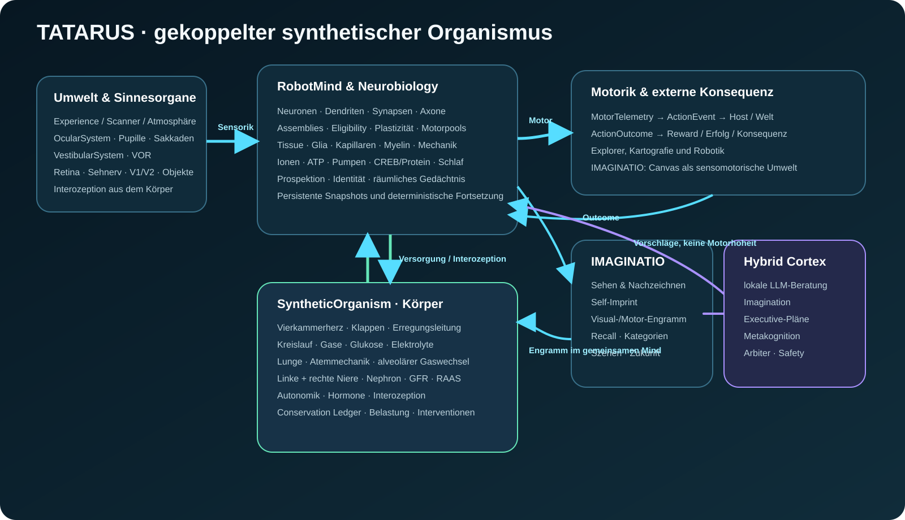

Synthetic Organism & Embodied Intelligence SDK
TATARUS
Ein persistenter synthetischer Organismus, in dem Nervensystem, Gewebe, Körperorgane, Sinneswahrnehmung, Gedächtnis, Prospektion und Handlung in einem gemeinsamen kausalen Zustand arbeiten.
Aktueller ProjektstandDokumentation direkt gegen den veröffentlichten Quellcode geprüft · GPL-3.0
Vom Reiz zur Erfahrung
TATARUS behandelt Umwelt- und Bildsignale nicht nur als Daten, die transformiert werden. Reize verändern einen laufenden synthetischen Organismus: Augen-/Vestibularsystem, Nervensystem, Körperphysiologie, Engramme und Motorik wirken zusammen.

Handbücher
ProjektOrientierung und SystemgrenzeSystemGesamtarchitekturHandbuchKopplungen und LaufmodellOrganismusHerz, Lunge, Kreislauf, Nieren, InterozeptionIMAGINATIOWahrnehmung, Self-Imprint und visuelles GedächtnisCortexOptionale LLM-/Executive-Schicht unter Safety-GrenzenUILive-Bedienung und TelemetrieAPIC++ und C ABIIntegrationBuild und Host-EinbettungValidierungTests, Kausalität, DeterminismusBenchmarkReferenzmessdatenEinordnungWissenschaftliche Grenzen